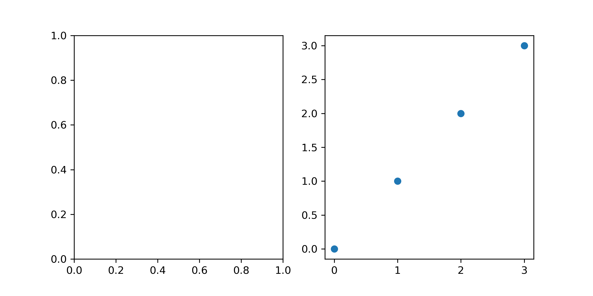
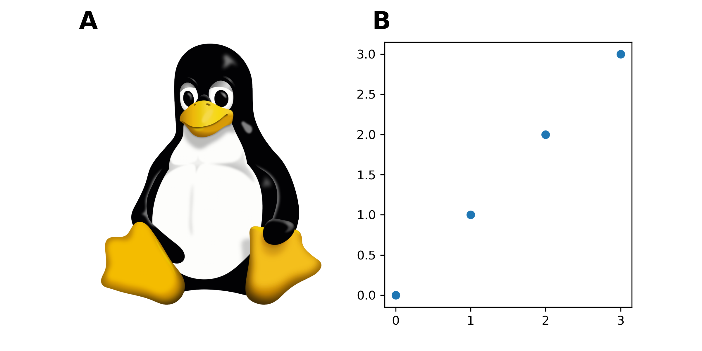

Streamlining creation of multi-panel paper figures with Python
Table of Contents
Papers published on scientific journals usually have limited space, so we usually have to generate figures with multiple panels. Within one figure, panels can be schematics (cartoons), example data (photos) and data analysis (plots). Usually, we manually combine the panels into a single figure in an image editing software, which makes it hard to be version-controlled. What’s worse, the figures are subject to frequent update, which leads to:
- difficulty in reverting to, or recovering part of the previous version;
- repeated manual labour to combine panels;
- arbitrary positioning of the panels and their labels.
Below, I show how to combine Python and Inkscape to streamline this process:
- use
matplotlibin Python to generate the spatial arrangement of panels and plot data in data panels; - (optional) use Inkscape to generate schematics;
- use Python again to combine the Python output and the schematics, and generate panel labels (A, B, C…).
1. Generating spatial arrangement and plots of data
For example, I want a 2-panel figure in a \(1 \times 2\) format, with the first being the schematics. I prepare the spacial arrangement and plot the data within one script:
import matplotlib.pyplot as plt
# create the figure
fig, ax = plt.subplots(1, 2, figsize=(8,4), dpi=300)
# plot something on the second panel
x = list(range(4))
ax[1].scatter(x, x)
# save the figure (for now)
plt.savefig("my-path-to-the-figure.png")
The figsize argument in plt.subplots controls the width and the height of the figure, each in inches, and the dpi argument controls the number of dots (pixels) per inch.
Combining the two settings, the resolution of the output figure should be \(2400 \times 1200\) pixels.

2. Generating a schematics with Inkscape
Before drawing in Inkscape, we must get the schematics’ size from Python:
bbox = ax[0].get_tightbbox(fig.canvas.get_renderer())
print(bbox.width, bbox.height)
Now we set the page’s size in the File >> Document properties... menu, using custom format in unit of px (pixel), and then filling in the height and width and make sure the orientation is correct.
How to draw in Inkscape is beyond the scope of this post, but Inkscape includes a wonderful, interactive tutorial in the Help >> Tutorials menu.
After finishing the schematics, save it as an .svg file for future modification, and export to a .png file to merge with the figure from Python.
To export to PNG, find the File >> Export... menu and within the prompted sidebar, choose the page menu and export with the default DPI (such that the width and height in px is correct).
3. Combining the schematics and the plots
Now the read the PNG file exported from Inkscape back to Python and plot in the first panel:
img = plt.imread("my-path-to-the-inscape-image.png")
ax[0].imshow(img)
# hide the x and y axis
ax[0].axis("off")
The last thing is to automatically add the labels A, B, C… to the panels, which is adapted from here:
import string
for n, axis in enumerate(ax): # ax.flat if `ax` is an array
axis.text(
-0.05,
1.05,
string.ascii_uppercase[n],
transform=axis.transAxes,
size=20,
weight="bold",
)
And don’t forget to save the figure:
plt.savefig("my-path-to-the-figure.png")
Now we can place both the SVG file from Inkscape and the Python under version control! There’s no need to place the generated PNG file under version control, because we’ll get it back once we run the Python code again.
